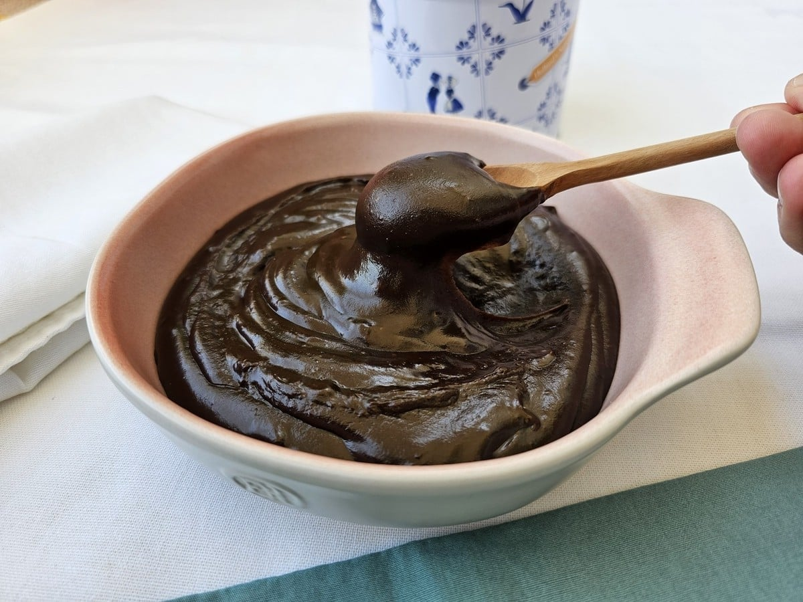

Brigadeiro de Panela

Perfeito para comer quentinho direto da panela em um dia chuvoso ou para aquela sobremesa rápida e deliciosa!
Ingredientes
- 2 colheres (sopa) de margarina
- 1 lata de leite condensado
- 4 colheres de nescau
Modo de Preparo
- Despeje a margarina dentro de uma panela e deixe ela derreter (fogo alto).
- Depois de derretida jogue o nescau.
- Logo após jogar o nescau abaixe o fogo, jogue o leite condensado e mexa até formar uma "calda" grossa.
- Deixe esfriar por alguns minutos, depois é so comer.